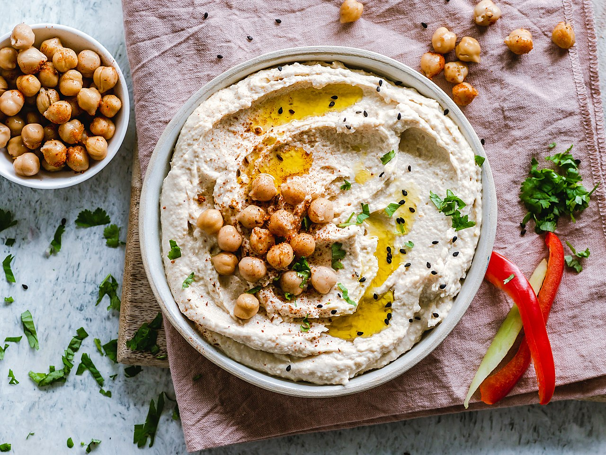

Quick Hummus Recpie
This recipe makes quick, tasty hummus, with no messing. It has been adapted from a number of different recipes that I have read over the years.

Hummus is a delicious thick paste used heavily in Greek and Middle Eastern dishes. It is very tasty with salad, grilled meats and pitta breads.
Ingredients
1 can (400g) of chickpeas (garbanzo beans)
A pinch of cayenne pepper
Instructions
-
Remove the skin from the garlic, and chop coarsely
-
Remove all the seeds and stalk from the pepper, and chop coarsely
-
Add all the ingredients into a food processor
-
Process all the ingredients into a paste
-
If you want a coarse "chunky" hummus, process it for a short time
-
If you want a smooth hummus, process it for a longer time
For a different flavour, you could try blending in a small measure of lemon and coriander, chili pepper, lime and chipotle, harissa and mint, or spinach and feta cheese. Experiment and see what works for you.
- Storage
- Refrigerate the finished hummus in a sealed container. You should be able to use it for about a week after you've made it. If it starts to become fizzy, you should definitely discard it.
Hummus is suitable for freezing; you should thaw it and use it within a couple of months.
Nutriton Facts of Food
chickpeas
tahini
sundried tomatoes
red pepper
cayenne pepper
clove of garlic
olive oil